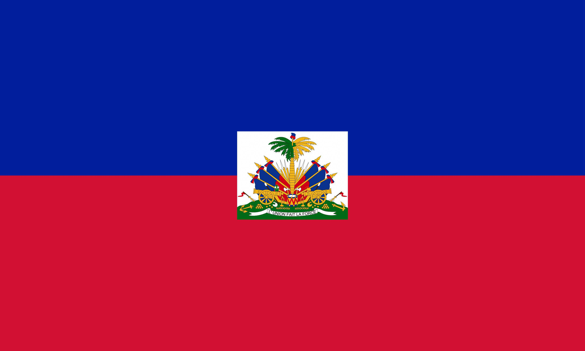

Urlin Gustave
About me
My name is Urlin, and I’m a junior software development student at BYU Worldwide. I live in Cap-Haitian, Haiti, and I’m passionate about football and coding. I enjoy learning new technologies, especially Python, HTML/CSS, and JavaScript, and I’m working toward becoming a skilled web developer.
Cap-Haitian, Haiti

Cap-Haitian is a historic city on the northern coast of Haiti, known for its colonial architecture and nearby landmarks like the Citadelle Laferrière. It’s a vibrant place full of culture, history, and energy — and it inspires me to keep learning and building.